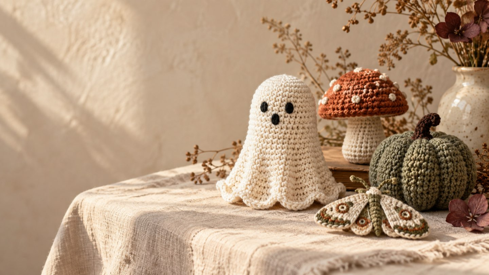
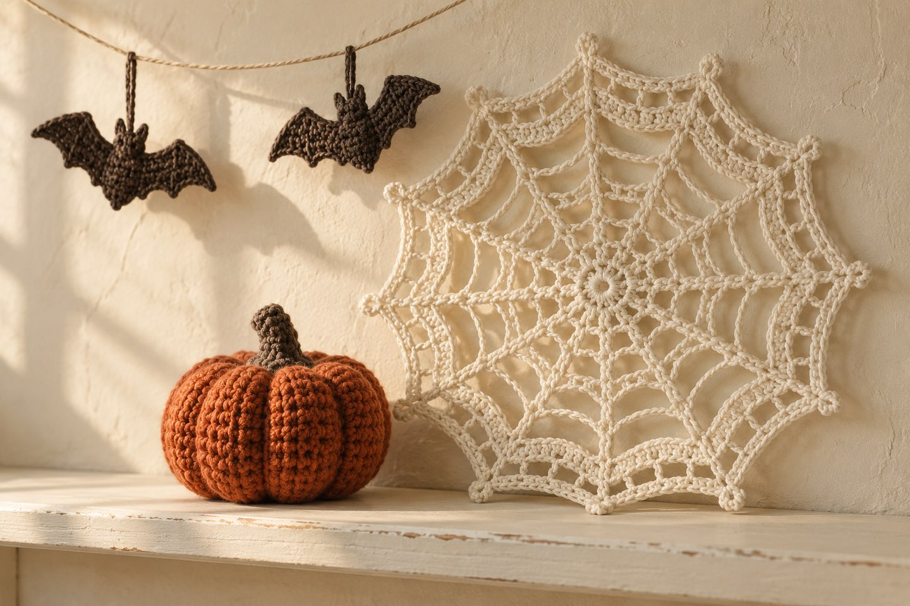
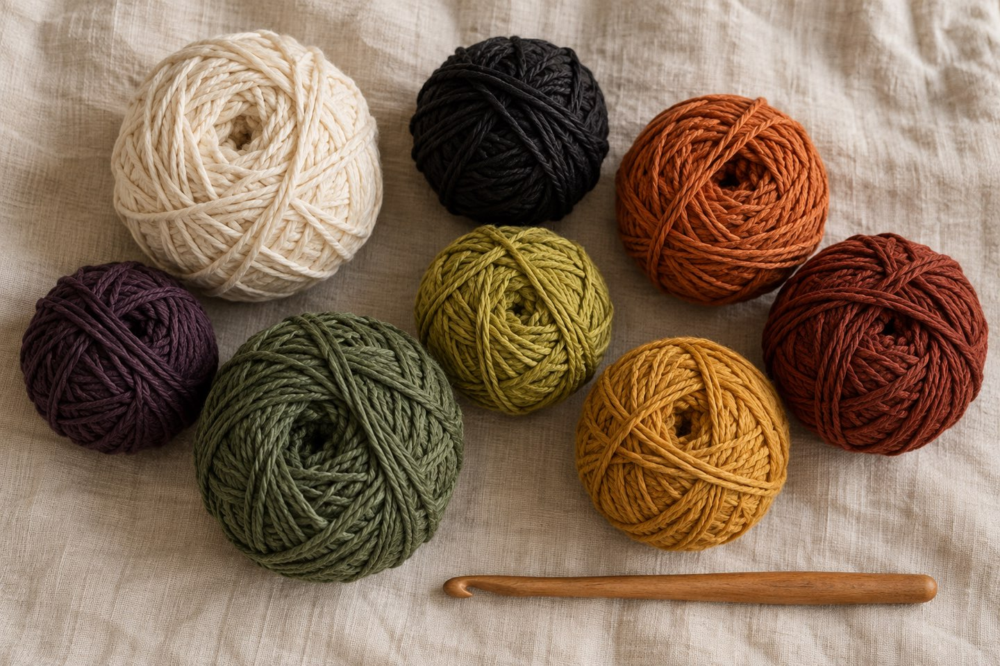
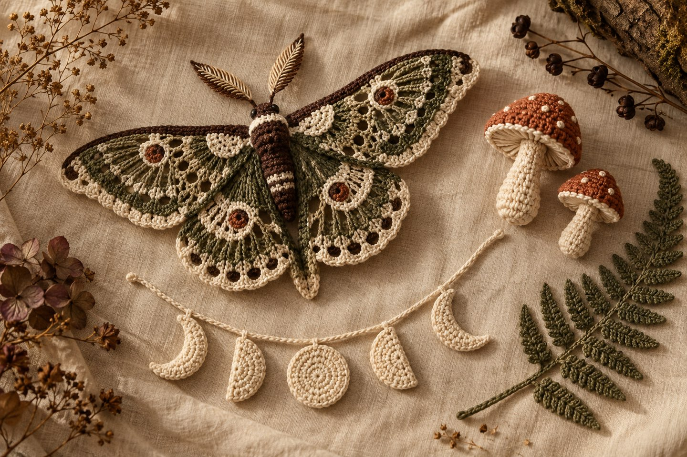
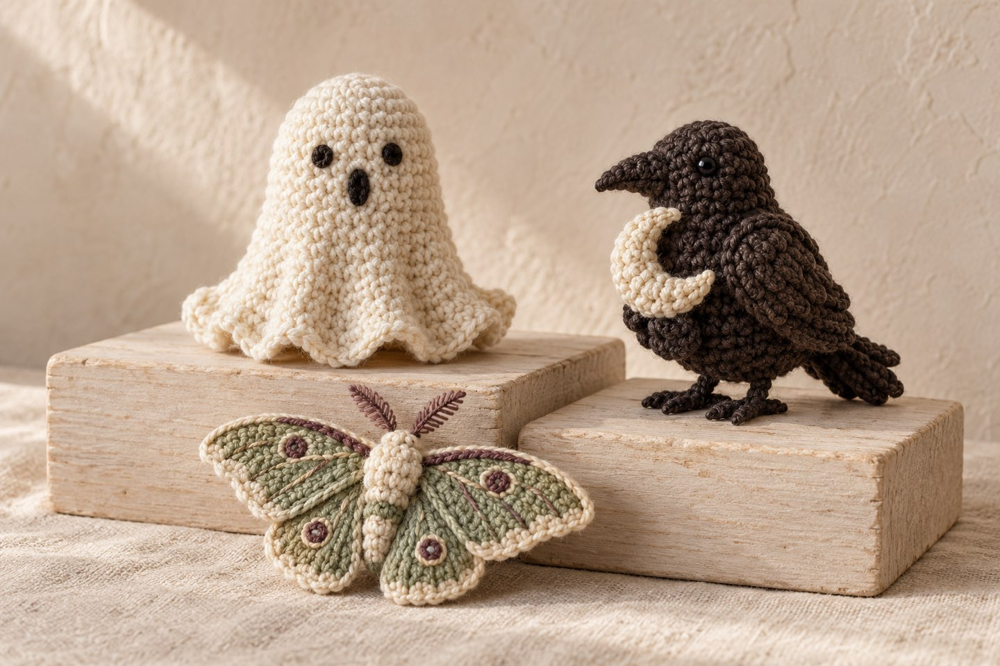
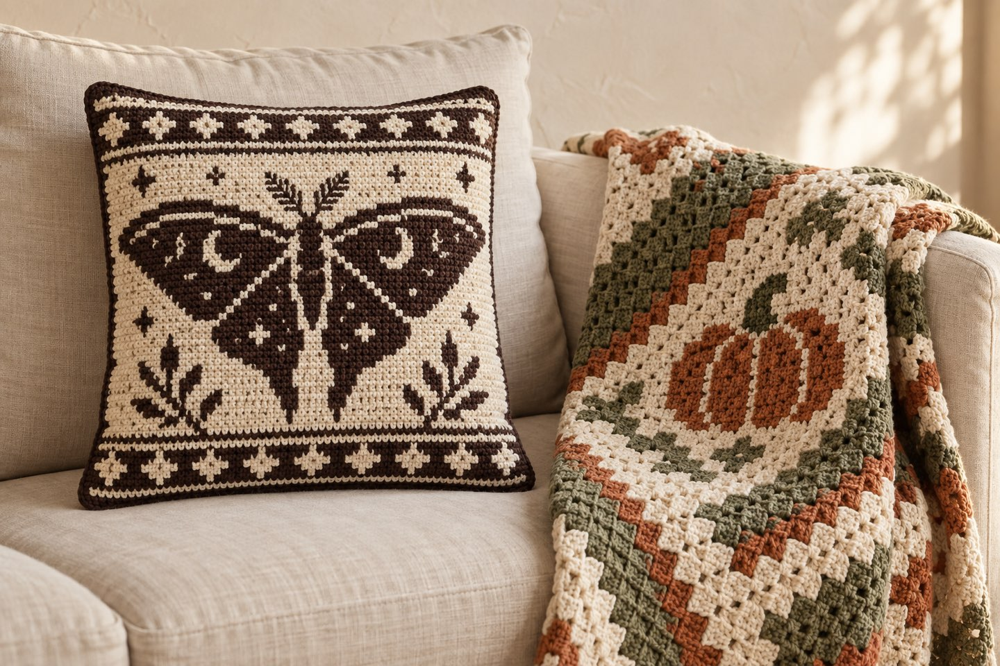
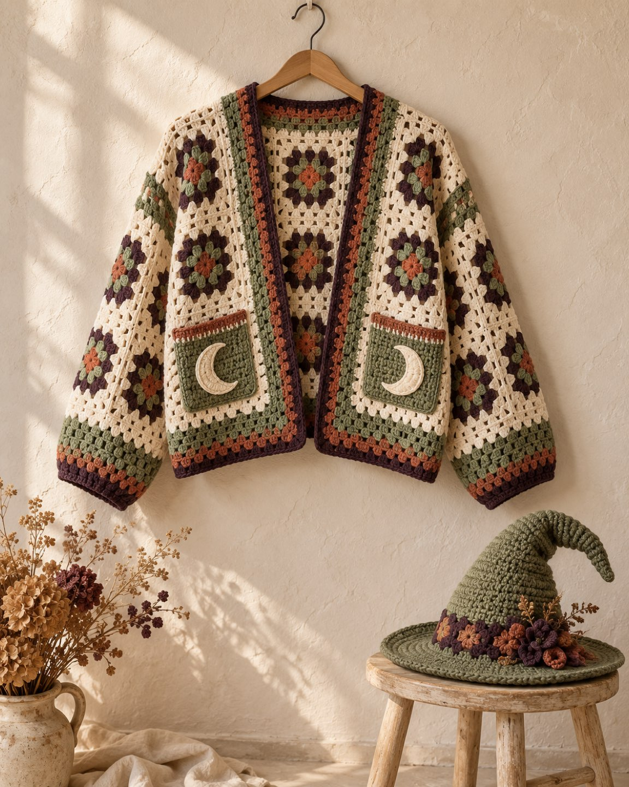
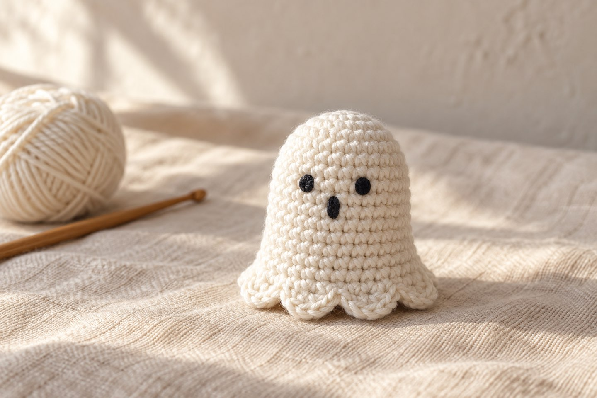

Halloween häkeln 2026: Vintage & Dark Botanical statt Neon-Grusel – plus Anleitung für einen Vintage-Geist

Kurz gesagt
Halloween am Haken wird 2026 leiser, wärmer und schöner. Statt grellem Orange-Schwarz sind gedeckte Vintage-Farben und Dark Botanical gefragt – Motten, Pilze, Farne, Raben und Mondphasen. Dazu kommen ungewöhnliche Amigurumi, Mosaik-Kissen und C2C-Decken sowie gehäkelte Kostüme. Weiter unten findest du eine kostenlose Anfänger-Anleitung für einen Vintage-Geist mit Rüschensaum.
Der Oktober ist da – und mit ihm die Frage, die sich jedes Jahr stellt: Wie viel Halloween darf es sein? Ich mag Grusel-Deko, aber nicht das Plastik-Skelett aus dem Discounter. Umso schöner, dass sich die Häkelwelt dieses Jahr in eine Richtung bewegt, die genau dazu passt: weg von Neon und Kitsch, hin zu Deko, die aussieht, als hätte sie schon Omas Fensterbank geschmückt. Hier sind die Trends – und ein kleiner Geist zum Nachhäkeln.
1. Vintage-Halloween: Wie sieht der Look aus?

Vintage-Halloween braucht keine echten alten Anleitungen. Den Look erreichst du durch verblasste Farben, feine Lochmuster, klare Silhouetten (Geister, Fledermäuse, Hexen, Kürbisgesichter) und eher sparsame Verzierung. Typische Projekte sind Deckchen, Untersetzer, Girlanden, kleine Regalfiguren und Spinnennetze.
Mein Tipp: Wiederhole zwei, drei Farben in allen Projekten. Dann wirkt deine Deko wie eine über Jahre gewachsene Sammlung.
Welche Farben passen zu Vintage-Halloween?

- Creme & Elfenbein
- Rußschwarz
- Gebranntes Orange
- Rost
- Senfgelb
- Verblasstes Chartreuse
- Dunkle Pflaume
- Moosgrün
2. Dark Botanical: Was ist das?

Dark Botanical ist der Stil, auf den ich mich dieses Jahr am meisten freue. Statt Kürbis, schwarzer Katze und Hexenhut geht es um Motten, Pilze, Farne, Mohnkapseln, Brombeerranken, Raben, Samen und Mondphasen – eine Bildsprache wie aus einem alten Naturkundebuch. Der große Vorteil: Diese Deko wirkt nicht nur am 31. Oktober, sondern bleibt bis in den Winter schön.
Projektideen: eine Mondphasen-Girlande, gehäkelte Farnblätter für den Kranz, Motten als Wanddeko oder Mini-Pilze. Für die Pilze kannst du meine Mini-Pilz-Anleitung nehmen – in Rost, Moosgrün und Creme passt sie perfekt zum Dark-Botanical-Look.
3. Ungewöhnliche Amigurumi statt Standardfiguren

Gefragt sind Figuren mit eigenem Charakter: ein Geist mit Rüschensaum, ein Rabe mit Mondsichel, eine Motte mit Lochmuster-Flügeln. Wer schon Erfahrung hat, kann vertraute Halloween-Figuren mit unerwarteten Farben oder Details neu interpretieren.
4. Mosaik-Kissen und C2C-Decken mit Halloween-Motiven

Für alle, die gern grafisch häkeln: Mosaic Crochet (zweifarbige Muster aus versetzten Stäbchen) und C2C-Graphgans (Decken, die diagonal nach Kästchenvorlage entstehen) sind dieses Jahr beliebt für Halloween-Kissen und Sofadecken. Das sind eher Projekte für Fortgeschrittene – und eher fürs nächste Jahr, wenn du jetzt erst startest.
5. Gehäkelte Kostüme und Halloween-Cardigans

In der Community sieht man diesen Herbst viele selbst gehäkelte Kostüme – vom ersten Babykostüm bis zur Hexenmütze – und Cardigans mit Halloween-Motiven, zum Beispiel aus Sechsecken zusammengesetzt. Wer es alltagstauglich mag, häkelt einen Cardigan in Vintage-Farben, der auch nach Halloween noch getragen wird.
Anleitung: Vintage-Geist mit Rüschensaum

- Größe
- ca. 6–7 cm hoch
- Zeit
- ca. 1–1,5 Stunden
- Niveau
- Anfängerin
- Garn
- Baumwolle in Creme oder Elfenbein (ca. 15–20 g), etwas Schwarz fürs Gesicht
- Werkzeug
- Häkelnadel 2,5–3 mm, Füllwatte, Maschenmarkierer, Wollnadel
Abkürzungen
MR = Magic Ring · fM = feste Masche · Zun = Zunahme (2 fM in eine Masche) · Abn = Abnahme (2 fM zusammen abmaschen) · hMg = nur ins hintere Maschenglied · Stb = Stäbchen · Km = Kettmasche. Alle Abkürzungen findest du in der Abkürzungs-Übersicht.
Gehäkelt wird in Spiralrunden von oben nach unten. Markiere den Rundenanfang. Unsicher bei Magic Ring & Co.? In den Häkel-Basics und im Lernpfad lernst du es Schritt für Schritt.
Kopf und Körper (Creme)
- MR mit 6 fM (6)
- 6× Zun (12)
- 6× (1 fM, Zun) (18)
- 6× (2 fM, Zun) (24)
- Runde 5–12: je 24 fM (24) – das sind 8 Runden
Gesicht
Mit schwarzem Garn zwischen Runde 7 und 8 zwei kleine Augen im Abstand von etwa 4 Maschen aufsticken, darunter in Runde 9 einen kleinen ovalen Mund. Gestickte Augen wirken vintage und sind sicherer als Sicherheitsaugen, falls Kinder im Haus sind.
Boden
- Nur hMg: 6× (2 fM, Abn) (18) – die vorderen Maschenglieder von Runde 12 bleiben frei für den Saum
- 6× (1 fM, Abn) (12) – jetzt fest füllen
- 6× Abn (6)
Faden abschneiden, durch die letzten 6 Maschen ziehen, festziehen und vernähen.
Rüschensaum
- Geist auf den Kopf drehen. Neuen Faden mit 1 Km in ein freies vorderes Maschenglied von Runde 12 anschlingen.
- 6× (1 Masche überspringen, 5 Stb in die nächste Masche, 1 Masche überspringen, 1 Km in die nächste Masche). Die letzte Km landet in der Anschlingmasche.
- Faden vernähen. Fertig sind 6 kleine Muscheln – wie der Saum eines Bettlakens.
Variante für die Girlande: Häkle oben am Kopf eine kleine Luftmaschenschlaufe an und fädle mehrere Geister im Wechsel mit Mini-Pilzen auf eine Kordel.
Noch mehr Ideen für den Herbst
In meinem Beitrag Häkeltrends Herbst 2026 findest du die großen Trends der Saison. Und wenn du eine passende Deko für Fensterbank oder Tisch suchst: Meine Kürbis-Anleitung macht in Rost oder Moosgrün neben dem Geist eine gute Figur.
Und du? Team Vintage oder Team Dark Botanical? Zeig mir deine Halloween-Deko auf Instagram oder TikTok! 👻
Häufige Fragen zu Halloween-Häkelprojekten
Was sind die Halloween-Häkeltrends 2026?
2026 geht der Trend weg von grellem Orange-Schwarz hin zu Vintage-Halloween mit gedeckten Farben und Lochmustern, zu Dark Botanical mit Motten, Pilzen, Farnen, Raben und Mondphasen, zu ungewöhnlichen Amigurumi statt Standardfiguren, zu Mosaik-Kissen und C2C-Decken mit Halloween-Motiven sowie zu gehäkelten Kostümen und Halloween-Cardigans.
Welche Farben passen zu Vintage-Halloween-Deko?
Typisch sind warme, gedeckte Töne: Creme und Elfenbein, Rußschwarz, gebranntes Orange und Rost, Senfgelb, verblasstes Chartreuse, dunkle Pflaume, Moosgrün sowie Anthrazit und Braunschwarz. Wer zwei, drei dieser Farben in mehreren Projekten wiederholt, bekommt einen stimmigen, gesammelt wirkenden Look.
Was ist Dark Botanical?
Dark Botanical ist ein Deko-Stil mit dunkler, naturkundlicher Bildsprache: Motten, Pilze, Farne, Mohnkapseln, Brombeerranken, Raben, Samen und Mondphasen. Der Vorteil für Häkelprojekte: Die Deko wirkt nicht nur an Halloween, sondern bleibt bis in den Winter schön.
Was kann man als Anfängerin zu Halloween häkeln?
Gut geeignet sind kleine Amigurumi wie ein Geist, flache Motive für Girlanden oder Untersetzer und Mini-Pilze. Ein einfacher Amigurumi-Geist braucht nur Magic Ring, feste Maschen, Zu- und Abnahmen und ist in etwa eineinhalb Stunden fertig.
Wann sollte man mit Halloween-Deko häkeln anfangen?
Für kleine Deko wie Geister, Pilze oder Girlanden reicht Anfang Oktober völlig. Größere Projekte wie Decken, Cardigans oder Kostüme fangen viele schon im Spätsommer an.
Quellen und Inspiration
- Crealandia: Halloween Handmade Trends 2026 (September 2026, englisch)
- Yarn Nest Studio: 18 Vintage Halloween Crochet Decor Ideas (September 2026, englisch)
- Bright Side: 12 Halloween Crochet Trends, Oktober 2026 (englisch)
- Underground Crafter: 2026 Halloween Crochet Along (14 kostenlose Anleitungen, englisch)